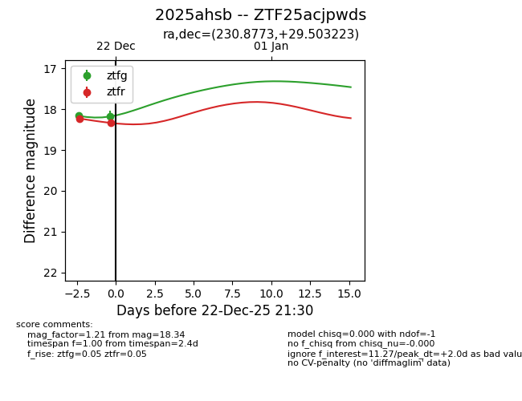
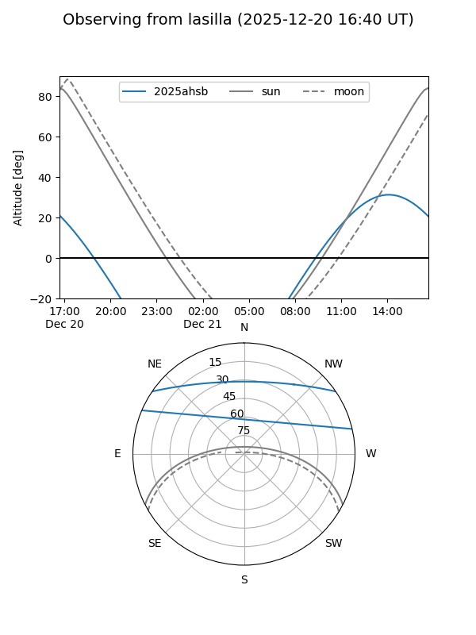
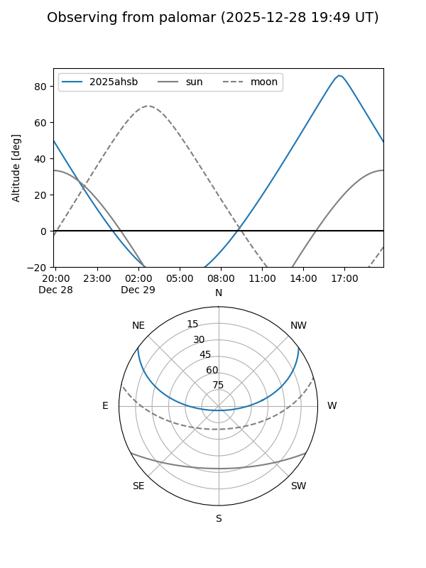
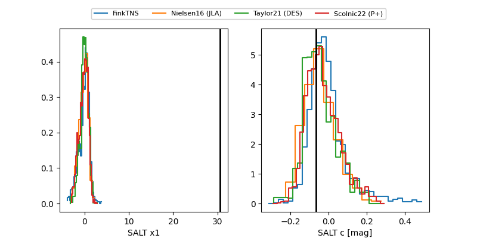

2025ahsb
Target 2025ahsb at 2025-12-29 12:38
Aliases and brokers:
FINK: fink-portal.org/ZTF25acjpwds
Lasair: lasair-ztf.lsst.ac.uk/objects/ZTF25acjpwds
ALeRCE: alerce.online/object/ZTF25acjpwds
TNS: wis-tns.org/object/2025ahsb
YSE: ziggy.ucolick.org/yse/transient_detail/2025ahsb
alt names
ZTF25acjpwds (ztf,fink_ztf)
2025ahsb (tns,yse)
Coordinates:
equatorial (ra, dec) = 230.8773,+29.50322
equatorial (HMS+DMS) = 15:23:30.55,+29:30:11.60
galactic (l, b) = (46.1235,+56.59396)
Flags:
Photometry:
last ztfg=18.18, ztfr=18.64
2 ztfg, 3 ztfr detections
Lightcurve

Visibility


Additional plots
